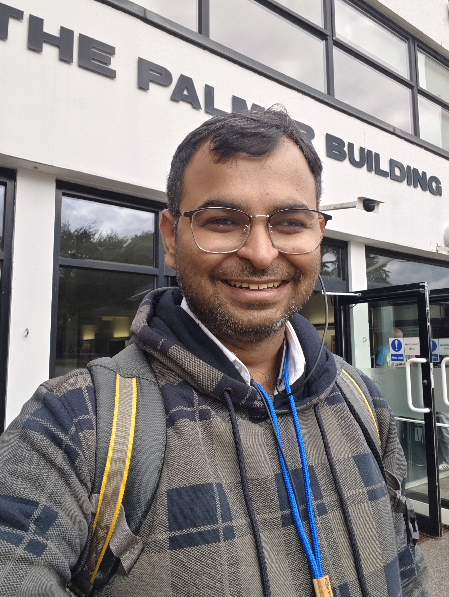

Hello, I'm Jivesh Dixit.
Climate Scientist specializing in Multi-Year to Decadal Variability & S2S Prediction
My core expertise lies in understanding and predicting global multi-year to decadal climate variability modes. During my doctoral research at IIT Delhi, I focused heavily on the global predictability of the Pacific Decadal Oscillation (PDO) and the Tropical Atlantic SST Gradient (TAG), advancing methodologies for correcting multi-model ensembles. Building directly upon this foundational research in long-term predictability, I currently serve as a Project Scientist-II at NCMRWF, where I translate complex AI methodologies into operational capability by deploying deep learning architectures to bias-correct and downscale subseasonal-to-seasonal (S2S) precipitation forecasts.
View Full CV
'">Latest Updates
Research Themes
Decadal Climate Variability
My foundational research investigates the predictability of multi-year to decadal climate variability modes. A primary focus is the global impact of the Pacific Decadal Oscillation (PDO) and Tropical Atlantic SST Gradient (TAG) indices. My methodologies involve rigorous treatment of model climatologies defined as averages across initializations, and the calculation of corrected multi-model ensembles (MME) using simple equal-weight averages.
S2S Machine Learning (NCMRWF)
Transitioning long-term predictability frameworks into operational S2S timescales. At NCMRWF, I develop spatiotemporal deep learning architectures to bias-correct and downscale weekly accumulated precipitation forecasts over India. This framework intelligently pre-selects atmospheric predictors based on established dynamical relationships, verified by XGBoost feature importance, to increase resolution from 60 km to 25 km.
AI Weather Forecasting
Actively running, evaluating, and post-processing state-of-the-art artificial intelligence weather forecasting models on High-Performance Computing systems. Frameworks utilized include GraphCast, FourCastNet, Pangu-Weather, AIFS-S2S, and the Anemoi framework.
Regional Ocean Modeling
Conducting 1/18° resolution ROMS simulations for the Bay of Bengal. By scaling surface wind stress forcing factors, this research analyzes mesoscale eddy kinetic energy, mean kinetic energy, East India Coastal Current transport, and the dynamics of upper-ocean heat content.
Software & Infrastructure
xFieldDyn
An open-source Python package currently in development, engineered on JAX and Flax. Designed for climate field dynamics, empirical orthogonal function (EOF) decomposition, linear inverse modeling, and spatiotemporal neural network forecasting.
xIndices
An open-source Python package designed for robust climate index calculations. Fully documented and archived on Zenodo.
View on Zenodo
HPC Compute Pipeline
Proficient management of remote Linux High-Performance Computing environments. Workflows feature PBS job submissions, CPU parallelization using Numba/Dask, and multi-GPU neural network training (TensorFlow/Keras/PyTorch DDP) utilizing NVIDIA Tesla K40m and A100 architectures.
Curriculum Vitae
Education
Research focus: Prediction of Regional Climate at multi-year to decadal timescales.
Experience
Monsoon Mission III project, Coupled Modeling group.
Selected Publications
- J3 J. Dixit, H. Kodamana, S. Sandeep, K. M. AchutaRao (2026). Deep Learning-Based Correction of Decadal Predictions of the PDO and TAG Indices. IEEE Geoscience and Remote Sensing Letters, 23, 1–5. doi:10.1109/LGRS.2026.3662257
- R6 J. Dixit, K. M. AchutaRao, S. Sandeep. Future Warming Shortens the Memory of the Pacific Decadal Oscillation and Erodes a Source of Near-Term Predictability. Earth's Future (under review).
- R5 J. Dixit, K. M. AchutaRao, S. Sandeep. Amplified land rainfall response to the Pacific Decadal Oscillation through stronger El Niño variability. Nature Communications (submitted).
- R4 J. Dixit, V. M. Mehta, K. M. AchutaRao. Estimating PDO decadal prediction skill in CMIP6: the roles of climatology definition and initialization frequency. Climate Dynamics (under review).